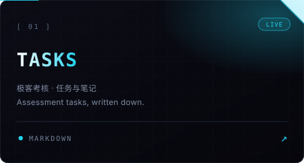
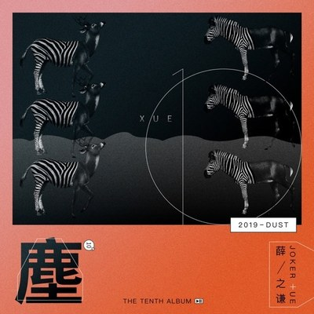
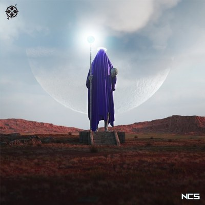
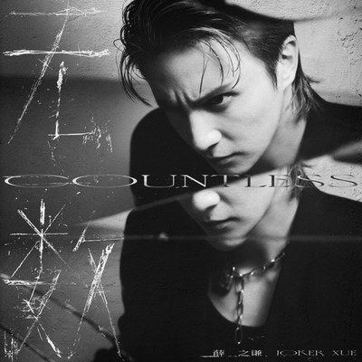
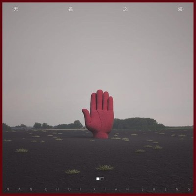
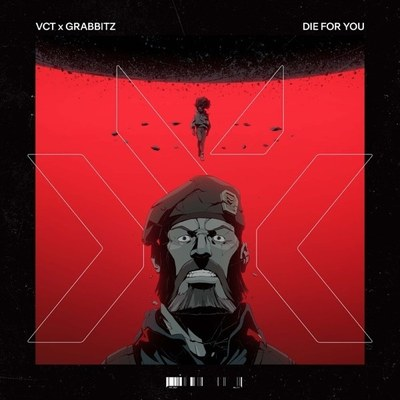
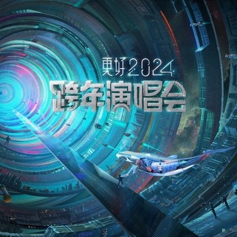

README.md⌥

⟨ 01 ⟩ WHOAMI

NOW · 白天写业务，晚上折腾底层LEARN · 编译器 / 图形学 / 分布式BUILD · 一个跑在自己机器上的小程序BELIEF · 优雅的抽象比聪明的代码稀缺
|
LOOP · 薛之谦 · 华语流行 · Lo-fiGEAR · VS Code · Windows Terminal · Git BashFUEL · 冰美式 × 2COORD · 中国
|
⟨ 02 ⟩ AUDIO LINK
1125 首收藏里播放最多的 19 首 · 点卡片进歌单页
⟨ 03 ⟩ ARSENAL
常用武器库 · 持续升级中
⟨ 04 ⟩ PROJECTS
已上线 / 施工中 · 保持更新
|
 |
 |
▸ 在折腾 · 手写一个能跑的小虚拟机 · 用 C++ 重写一个命令行工具 · 读完 SICP
<05> ARCHIVE · 我喜欢 · 前 19 首（点开）
| 曲目 | 歌手 | |
|---|---|---|
 | 最佳歌手 (Live) | 薛之谦 · 许嵩 |
 | 媚人 | 薛之谦 |
 | 崇拜 | 薛之谦 |
 | 我好像在哪见过你 | 薛之谦 |
 | 一半 | 薛之谦 |
| 爱好 (2024 现场) | 薛之谦 | |
 | 念 | 薛之谦 |
 | 关于你 | 薛之谦 |
 | 配合 | 薛之谦 |
 | 火星人来过 | 薛之谦 |
 | Royalty | Egzod · Maestro Chives |
 | 锤子 (feat. 范丞丞) | KnowKnow · 范丞丞 |
 | AI | 薛之谦 |
 | 无数 | 薛之谦 |
 | 无名之海 | 石岩 |
 | 陪你去流浪 | 薛之谦 |
 | Die For You | Grabbitz |
| Teeth | 5 Seconds of Summer | |
 | 丑八怪 (Live) | 薛之谦 |
封面墙与整份歌单 → 网页版歌单 ↗
<06> TELEMETRY · 数据面板（点开）
GitHub 统计卡片 · 有提交记录后再展开更好看
// 我是那种会为一个变量名纠结十分钟的人。
// 把想法写成代码，把代码变成作品。
README v3.0 · NIGHT CITY GRID · github.com/DummyStrophael